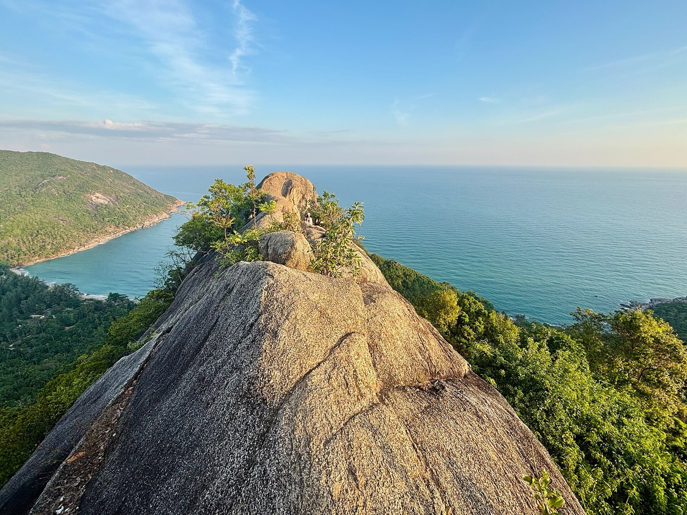

Koh Phangan is not one market but several, and the right area depends entirely on what you want from island life. Here is an honest guide to each, and why the quiet north is the pick for buyers who want sea views without the noise.
The short answer
- North coast (Chaloklum): best for quiet, sea views and a real community.
- Srithanu / west: best for wellness, yoga and sunsets.
- West coast (Haad Yao, Haad Salad): best for beach life and sunsets.
- Thong Nai Pan: best for secluded, upscale seclusion.
- South (Thong Sala, Ban Tai): best for convenience and amenities, but busiest.
The most common mistake buyers make is treating Koh Phangan as a single place. The south is busy, walkable and close to the pier; the north is quiet, green and sea-facing; the west chases the sunset; the east is remote. Match the area to how you actually want to live, and the decision gets easy.
| Area | Vibe | Best for | Trade-off |
|---|---|---|---|
| North (Chaloklum) | Quiet fishing village, sea-view hills | Calm, sea views, community, nature | A short drive from the main town |
| Srithanu / Hin Kong | Wellness and yoga hub | Retreats, yoga, west-coast sunsets | Can be busy in high season |
| West (Haad Yao, Haad Salad) | Beach life, sunset coast | Swimming, sunsets, sociable beaches | More developed, less seclusion |
| Thong Nai Pan | Secluded northeast bays | Upscale, private, resort-grade | Remote, fewer everyday services |
| South (Thong Sala, Ban Tai) | Town and party belt | Convenience, amenities, the pier | Busiest, closest to the party scene |
The north coast: Chaloklum
The north is the calmest, greenest part of Koh Phangan, and Chaloklum is its heart: a working fishing village on a sheltered bay, ringed by sea-view hillsides. It is the area least touched by party tourism, with safe swimming bays, fresh seafood, a genuine local community, and quick access to the island's best nature, from Sail Rock diving to Bottle Beach. For buyers who want a sea view, peace and a place that still feels real, the north is the strongest choice on the island. It is also why we built Gaia here.

Srithanu & the west coast
A short drive from Chaloklum, Srithanu is the island's wellness capital, dense with yoga shalas, retreats and raw-food cafés, and it catches the west-coast sunset. Further down, Haad Yao and Haad Salad are beach-life areas with sociable sand, reefs offshore and front-row sunsets. These suit buyers who want community and a lively-but-not-wild beach scene. See our wellness guide for the area in detail.
Thong Nai Pan & the northeast
On the northeast coast, the twin bays of Thong Nai Pan are the island's most upscale enclave, home to its luxury resorts and a handful of premium villas. It is beautiful and private, but genuinely remote, with fewer everyday services and a longer, winding drive to town. Best for buyers prioritising seclusion above convenience.
The south: Thong Sala & Ban Tai
The south is the island's practical centre. Thong Sala is the main town and ferry pier, with the biggest concentration of shops, banks, markets and restaurants, while Ban Tai stretches along the south coast toward the famous full-moon beach. It is the most convenient area to live, but also the busiest and closest to the party scene, which is exactly what many long-term buyers are trying to get away from.
So where should you buy?
If your priorities are nightlife and walk-everywhere convenience, look south. If you want pure seclusion and budget is not the constraint, look at Thong Nai Pan. But if you are like most buyers we meet, wanting a sea view, calm, nature and a genuine community while still being able to reach the whole island easily, the north around Chaloklum is the sweet spot. It is the quiet side people fall for, and increasingly where long-stay residents and investors are choosing to put down roots. For how ownership works once you have chosen, see can a foreigner buy property in Koh Phangan.
Frequently asked questions
What is the best area to buy property in Koh Phangan?
It depends on your priorities. For quiet, sea views and community, the north around Chaloklum is the strongest choice; Srithanu for wellness, the west coast for sunsets and beach life, Thong Nai Pan for secluded luxury, and the south for convenience.
Where is the quietest place to live?
The north coast around Chaloklum, well away from the southern party scene, with sheltered bays and sea-view hillsides.
Which area is best for sea views?
The northern hillsides around Chaloklum and the west coast around Srithanu and Haad Yao. The north uniquely combines sea views with quiet and a working community.
Is the north a good place to buy?
Yes, especially for buyers who want quiet, sea views and nature while staying within easy reach of the island. It is the area least affected by party tourism and increasingly popular with long-stay residents and investors.
Thinking the north is your kind of place? See what living in Chaloklum is really like. The Gaia team.